No canto superior direito, clique em “Minha Conta” e selecione “Console de gerenciamento da AWS”.
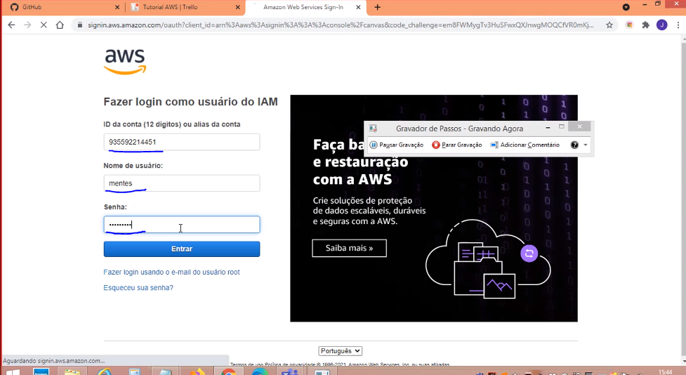
Para fazer o login, digite o ID da conta, juntamente com o nome de usuário criado pelo Root e sua senha. Clique em “Entrar”.
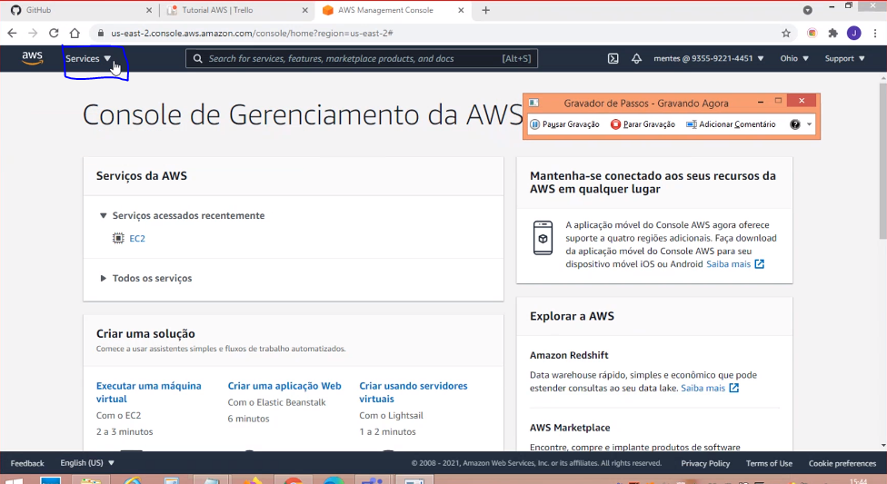
No canto superior esquerdo, clique em “Services”.
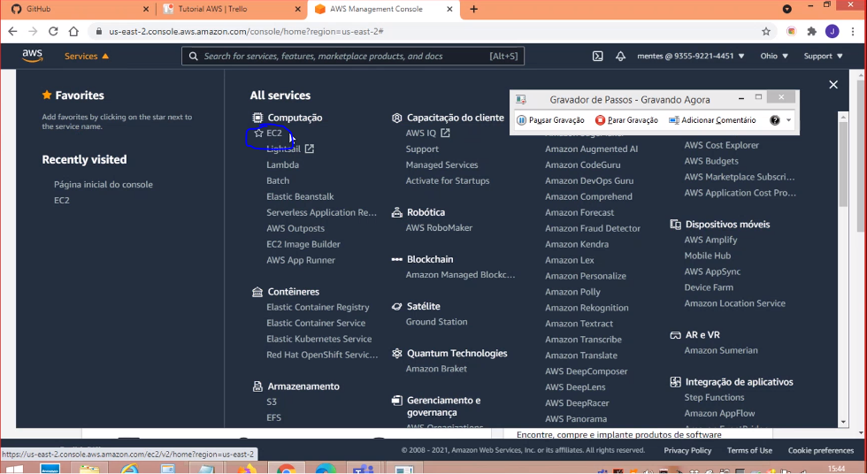
Na categoria “Computação”, clique em “EC2”.
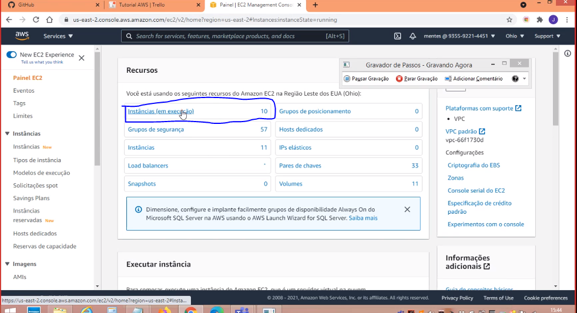
Clique em “Instâncias (em execução)”.
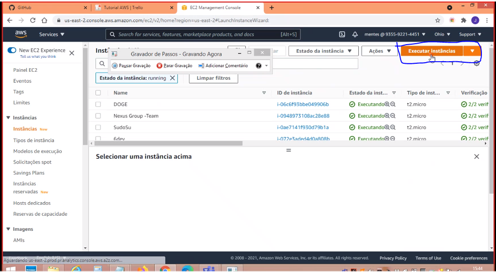
No canto superior direito, abaixo da barra de navegação, clique em “Executar instâncias”.
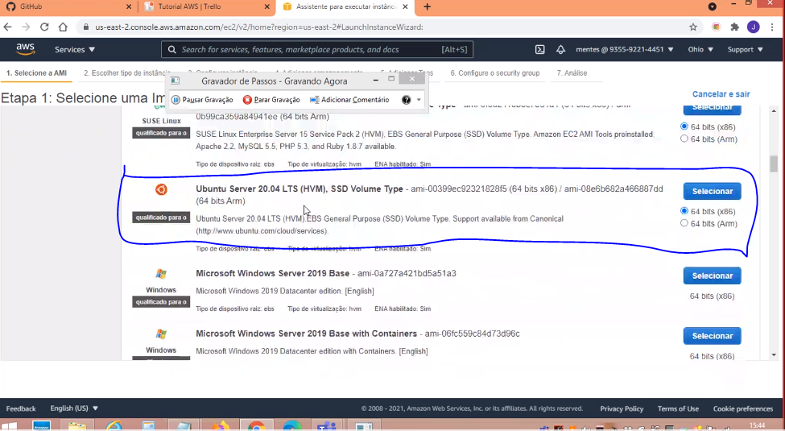
Etapa 1: Role a página até achar Ubuntu Server 20.04 e selecione.
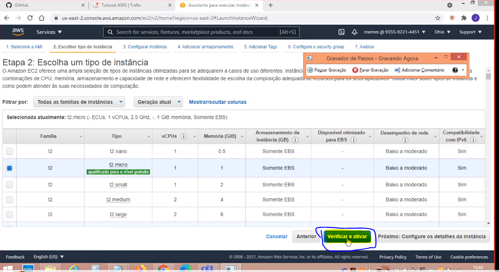
Etapa 2: Escolha a tipo de instância t2 micro e clique em “Verificar e ativar”.
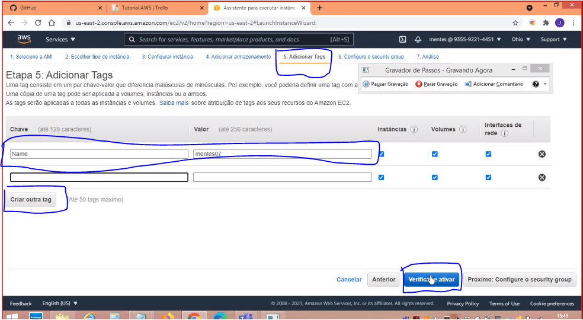
Etapa 5: Adicione a tag “Name” e o valor “Nome da Equipe”. Clique em “Verifique e ativar”.
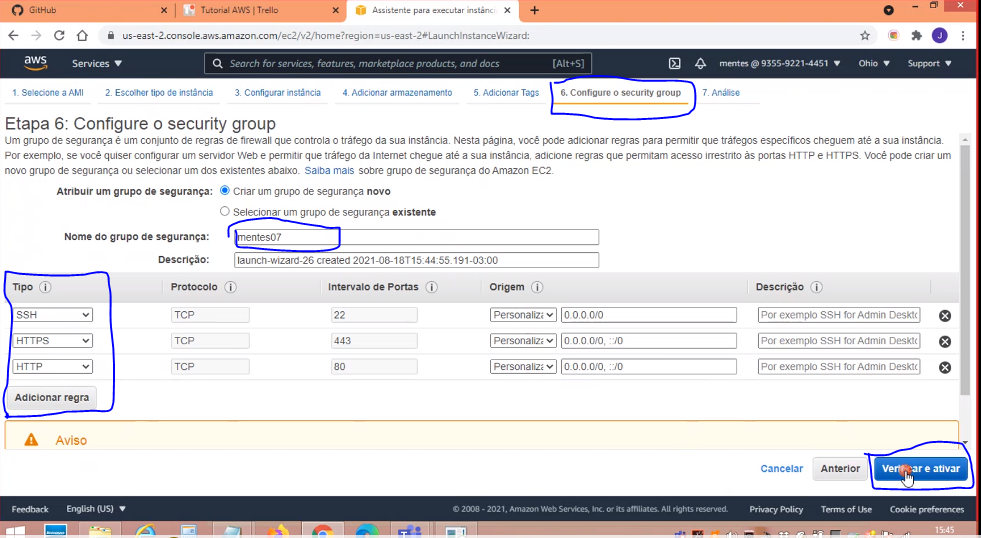
Altere o nome do grupo de segurança. Adicione uma exceção para o protocolo HTTP e HTTPS. Clique em “Verificar e Ativar”.
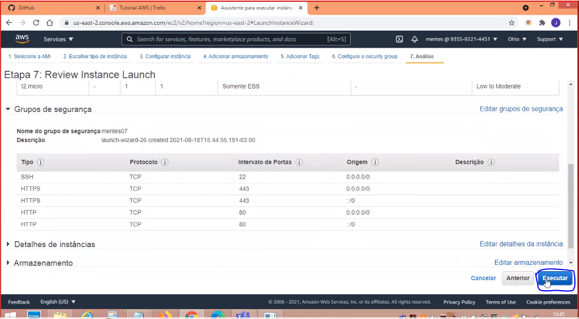
Etapa 7: Revise todas as configurações feitas. Clique em “Executar”.
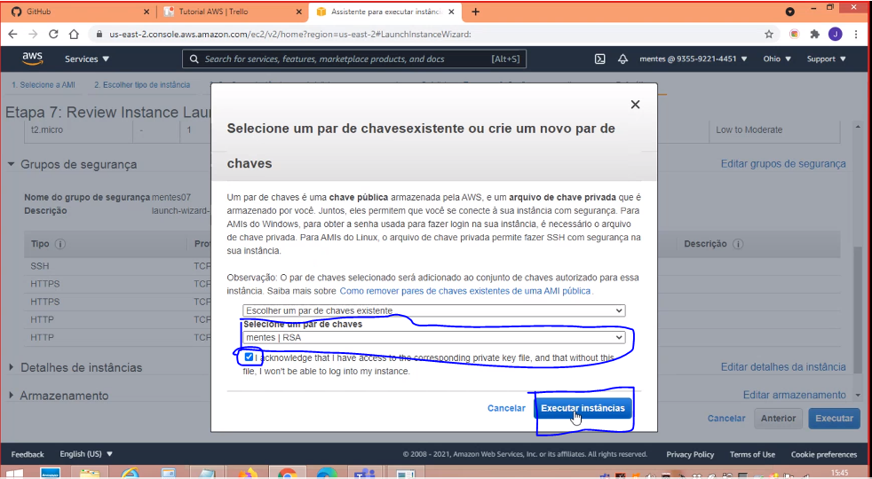
Selecione um par de chaves já existente. Selecione o checkbox. Clique em “Executar instâncias”.
PS: Caso deseje criar um par de chaves novo, selecione “Criar um par de chaves novo” e digite o nome. NÃO ESQUEÇA DE FAZER O DOWNLOAD DA CHAVE
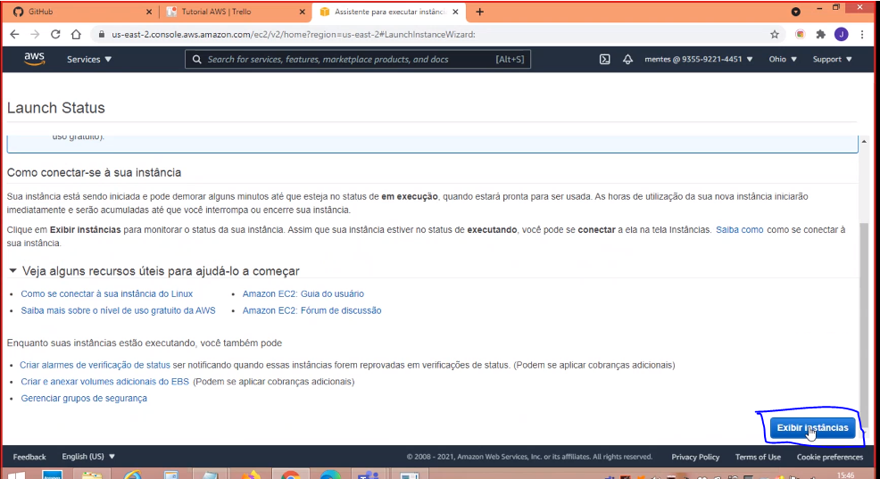
Clique em “Exibir instâncias”.
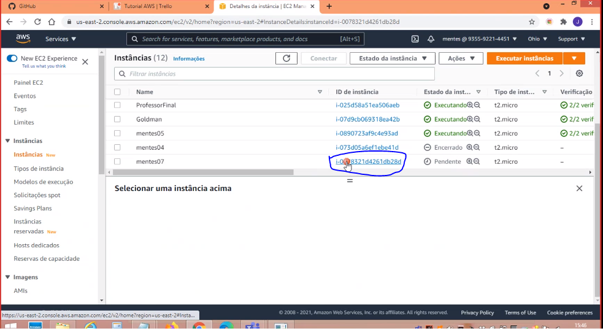
Ache sua máquina virtual e clique em seu ID de instância.
1. Após a criação da máquina virtual, acesse o serviço EC2
2. Verifique a instância rodando e ver o número do IP Público da instância
3. Anote o número do IPv4 Público